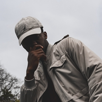
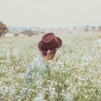
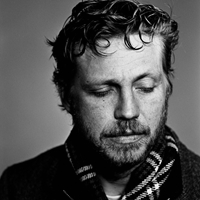

Leadership
I'm Hector Toro, and I started creating my first released game in school, and continued to work with it while working a desk job. I was completely self taught throughout it's development. In addition, I've always been a clumsy and awkward guy. I've always had trouble grasping abstract concepts. But somehow I’ve consistently earned a six-figure income for half a decade making indie games.
My games Defeat of Heroics & Alterphobia have launched on most platforms, all while I’ve grown a large following of subscribers, teaching game development on YouTube.
My games Defeat of Heroics & Alterphobia have launched on most platforms, all while I’ve grown a large following of subscribers, teaching game development on YouTube.

Dash Williams is an Administrative Assistant with eight years of experience working alongside the executive team of a Fortune 500 company. Dash specializes in administrative technology and is responsible for educating other employees on using progressive systems and applications, including accounting software, mass communication procedures and organizational apps. Dash is a powerful force in the workplace and uses his positive attitude and tireless energy to encourage others to work hard and succeed. Dash is inspired daily by his wife and their two daughters. In his free time, Dash likes to hike, cook and play video games with his grandson

My name is Alex Drysdale and I am a Web Developer for DevtoDev. I am an accomplished coder and programmer, and I enjoy using my skills to contribute to the exciting technological advances that happen every day at DevtoDev. I graduated from the California Institute of Technology in 2016 with a Bachelor's Degree in Software Development. While in school, I earned the 2015 Edmund Gains Award for my exemplary academic performance and leadership skills.
Sales
Natalie Abrams is an optimistic and enthusiastic sales professional with over 20 years of experience as a sales manager in food and beverage solutions. She is skilled at developing the right action plan for each of her client's unique needs and committed to helping them choose the best products. Throughout her career, Natalie has earned the trust of several national and international companies and maintained strong client relationships that generate repeat business. She attributes her success to her ability to listen to customers and put their needs first.
Marianne Foster is an award-winning sales professional with over 13 years of experience in the technology industry. She has achieved over $600K in sales each quarter since early 2018 and continues to generate repeat business from her customers. Her in-depth knowledge of what her customers' needs are and what technology is available today allows her to exceed customer expectations and provide excellent service. She is passionate about developing and maintaining strong relationships centered on trust with each of her customers. Besides her strong sales background, Marrianne is fluent in Spanish, Japanese and French.
Lori Sanduski is a results-driven sales professional with over 10 years of experience in consumer products. Lori received an MBA from West Carol University in 1986 and applies her knowledge of business, in-depth sales strategies and exceptional presentation skills to help her customers choose the best products on the market today. Consumer Products International recognized her as salesperson of the year for the last three years in a row.
Administration
With experience in strategic marketing, digital media, and what really needs to happen behind the scenes to make a small business run smoothly, Vered is ready to take on whatever comes her way. From ordering supplies to booking speaking engagements, she believes that each task is deserving of attention to detail.
Jerry McMillson is a dedicated administrative assistant with eight years of experience in leadership roles. They are hardworking and versatile with proven organizational skills and thorough knowledge of corporate policies and procedures. Excellent communication and people skills with extensive strategic planning capabilities.

James Oakwood is a capable, determined, confident, and well-organized administrative assistant, with extensive experience in supporting mid and senior-level managers by providing them with consistent clerical support. A highly approachable individual who has a pleasant attitude and a willingness to make a positive mark.
Instructors
Ed Nelson is a professor in DevtoDev at the University of Washington where he has been a faculty member since 2003. He is the School's Lead Instructor. From 2013–2018, he held the J. Ray Bowen Professorship for Innovation in Development Education. Ed completed his Ph.D. at Cornell University and his undergraduate studies at Rice University. His research interests lie in the area of programming languages, ranging from theory to design to implementation. He has collaborated actively with researchers in several other disciplines of computer science, particularly computer architecture on problems at the hardware/software interface.
Debra Carroll knows that successful students become successful people. This is her 7th year at DevtoDev and her 3rd year instructing the crowdfunding class. Mrs. Carroll was the 2011 Newell Unified School District Instructor of the Year, and received her National Board Certification in 2013. She loves science and majored in biology at Arizona State University, where she also earned her teaching credential and Master of Education degree.

George Davidson is a dedicated instructor with ten years of experience in teaching roles. They are a hardworking individual with many skills of organizational and thorough knowledge of policies and procedures. Excellent communication and people skills with extensive strategic planning capabilities. He is passionate about developing and maintaining strong relationships centered on trust with each of his students.